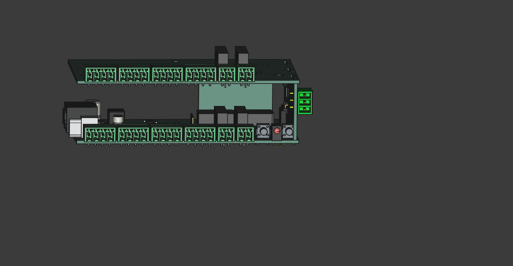
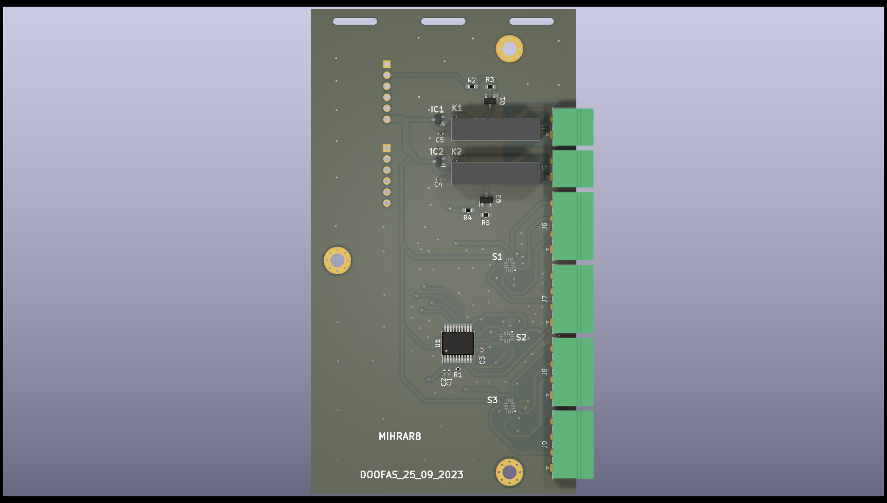
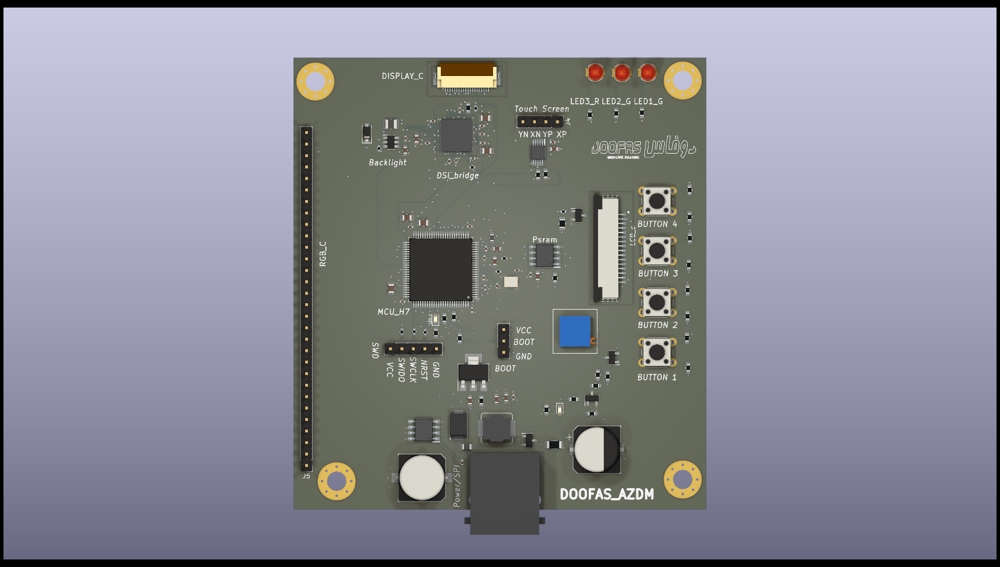

Projects – Abderrezak Mouacher
Electronics and Embedded Systems Engineer
📧 mouacherabderrezak@gmail.com
🌍 LinkedIn Profile
Soft Starter
Description: Designed and developed a soft starter system for AC induction motors, focusing on hardware implementation for industrial applications. The design utilizes thyristor-based phase angle control to gradually ramp up voltage at motor startup, reducing inrush current and mechanical stress. The control circuit was built around a microcontroller (STM32) to manage timing, user interface, and protection logic (overcurrent, stall detection).
This soft starter was designed to meet EMC standards and to be easily integrated into industrial automation panels. Applications include pumps, conveyors, and compressors
- Power stage: Opto-isolated triggering of SCRs with snubber protection
- Control board: STM32, analog signal conditioning, relay outputs
- User interface: LCD display with menu navigation
- Protections: Overvoltage, overcurrent, thermal shutdown
Technologies Used: RS485, Motor Control, STM32, KiCad
Images:


I/O Device with Modbus TCP/IP and 4PPoE
Description: Designed and developed an I/O device capable of reading sensor data via the I²C bus and transmitting it to a PLC using the Modbus TCP/IP protocol. The project aimed to consolidate all I/O communications through a two Ethernet port, reducing costs related to expansion modules and sensor power cabling.
- Ring topology support for seamless network integration
- Power over Ethernet (PPoE) capability
- High-speed, reliable data communication
- Compact and space-efficient form factor
- Compact & industrial-grade
Technologies Used: Modbus TCP/IP, Ethernet, 2PPoE, STM32
Images:


RTD8 – 8-Channel RTD I/O Module
Description: Designed and developed a high-reliability temperature controller using the STM32 platform, capable of reading 8 RTD (PT100) sensor inputs for accurate and real-time temperature monitoring. Integrated RS485 communication ensures robust connectivity for industrial applications. The system includes alarm, trip, fan control, and fault detection features to enhance safety and operational efficiency in critical applications such as motor winding protection.
- 8 RTD channels with protection
- Alarm, trip, fan control, fault detection
- RS485 for industrial integration
Technologies Used: RS485, RTD, STM32
Images:


STM32H7B0VBT6 Development Board Design
Description: Development Board Design
Designed a custom development board based on the STM32H7B0VBT6 microcontroller, tailored for advanced embedded and HMI applications. The board integrates a range of features to support high-performance processing, display control, wireless communication, and peripheral interfacing.
- 64 GPIOs, LTDC, touchscreen
- 64MB PSRAM via QSPI
- Wi-Fi, Bluetooth, USB-C
- Boost converter up to 35V
- LTDC protocol output for high-resolution display integration
- USB-C power supply for wide compatibility
- 6 VCC and 6 GND outputs for easy connection to sensors and external devices
Technologies Used: STM32H7B0VBT6, QSPI, LTDC, Wireless

Multi-Display HMI Device with Touchscreen
Description: Designed and developed a versatile HMI display card capable of supporting multiple display interfaces, including LCD, MIPI DPI (RGB), and MIPI DSI. Integrated a capacitive touchscreen interface to enable intuitive and responsive user interaction. The project aimed to improve usability while maintaining compatibility with cost-effective and widely available display technologies.
- Supports LCD, MIPI DPI/DSI
- Touchscreen interface
- Designed for industrial usability
- Focused on maximizing compatibility and reducing hardware costs
Technologies Used: STM32, HMI, Touchscreen, KiCad

📹 Watch Demo
Drone Prototype Project
Context: University Project – June 2021
Description: Designed and built a functional drone prototype as a student project. Focused on real-time control, flight stability, and basic obstacle avoidance using embedded systems principles.
- Designed frame and electronics layout
- Programmed flight controller and stabilization algorithms
- Integrated wireless control and sensors
Technologies Used: Microcontrollers, IMU Sensors, Wireless Communication, Embedded C